Off Route, and the way back
Off Route waits until you really are off the route, so a switchback won’t set it off. Then it gives you the distance and the direction, on the map, on your wrist and, with iPhone locked, on the Lock Screen.
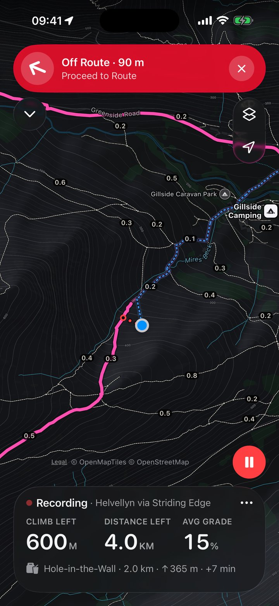
Ridgeway for iPhone and Apple Watch
Topo maps that live on your iPhone and Apple Watch, with turn alerts on your wrist, every climb counted and the way back, all without a signal. No account, and navigation is never locked.
Coming to the App Store
How offline maps work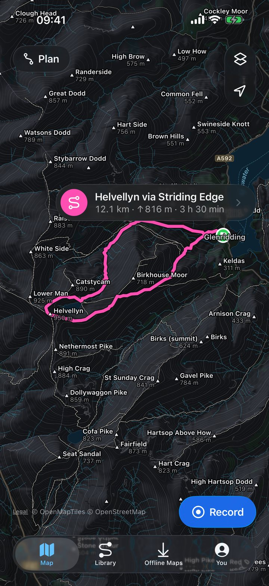
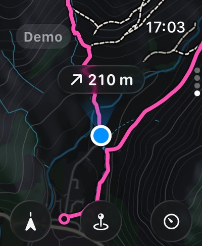
Map data © OpenStreetMap contributors · © OpenMapTiles · OpenFreeMap
Trail Run
Choose Trail Run at the start and Ridgeway retunes itself for running speed: turn alerts come early enough to act on, Off Route reacts in seconds, and climbs are found at a runner’s scale, descents included.
Pace and grade-adjusted pace, automatic kilometre or mile splits, and manual laps kept separately.
Up to three reminders, by time or distance, each with its own pattern of taps on your wrist.
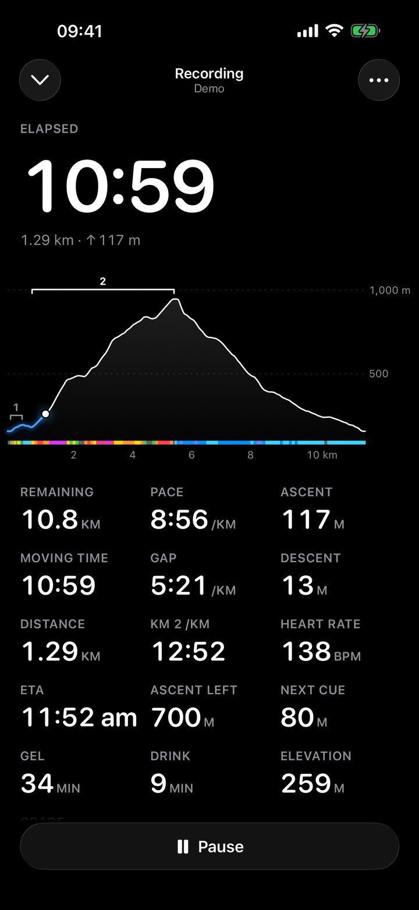
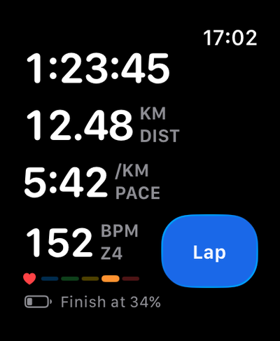
The charge you’ll finish with, worked out from how fast the battery is falling.
On Apple Watch Ultra, press it to mark a lap, arrive at an aid station or log fuel.
Race Day Part of Ridgeway Plus
Mark the aid stations and cutoffs on your route, or paste them in from the race notes. On the day, Ridgeway shows the distance, climb and arrival time to the next one, and how much time you have in hand.
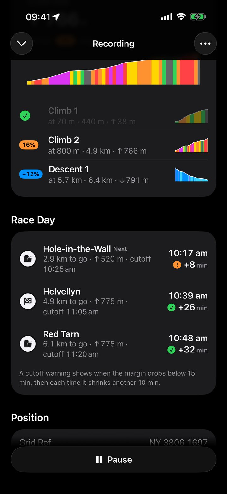
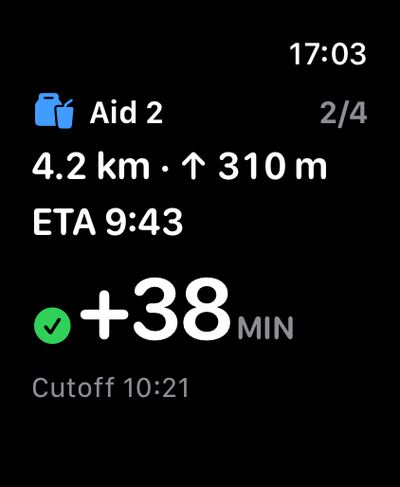
Distance, climb, arrival time and margin, on its own page on Apple Watch.
A tap on your wrist when your margin drops below the warning you choose, 15 minutes unless you change it, and again each time it shrinks by another 10.
A rest timer starts as you reach an aid station, and stops as you leave.
Copy the stops and cutoffs from the race website, and paste them onto the route.
Offline Maps
Choose the squares you want, or a corridor along your route, and see the size before you download. Maps are drawn on your iPhone and Apple Watch from compact vector data, so a whole national park fits in tens of megabytes.
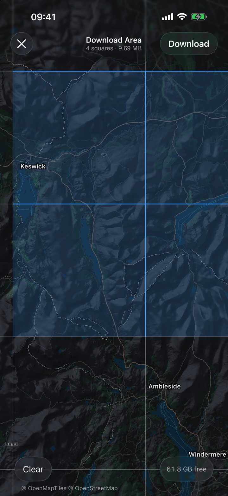
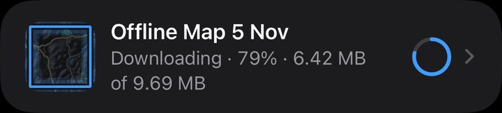
Map data © OpenStreetMap contributors · © OpenMapTiles · OpenFreeMap
Shown only once every tile has been checked, so you know before you leave.
Stops every map request. Anywhere you haven’t downloaded shows hatched.
Shaded relief and contour lines from public elevation data, under every path and label.
OpenStreetMap, served by OpenFreeMap, from the Lake District and Eryri to the Alps and the Rockies.
Plan and import
Tap the map to add points, joined by straight lines, and watch the distance, ascent and time add up. For a route that follows the path, import a GPX from any app or website.
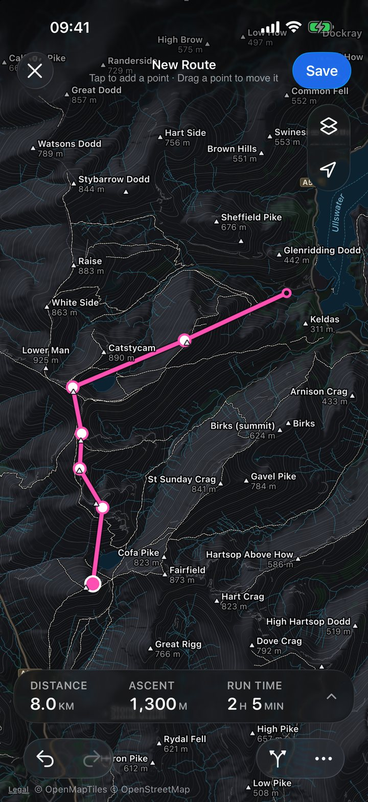
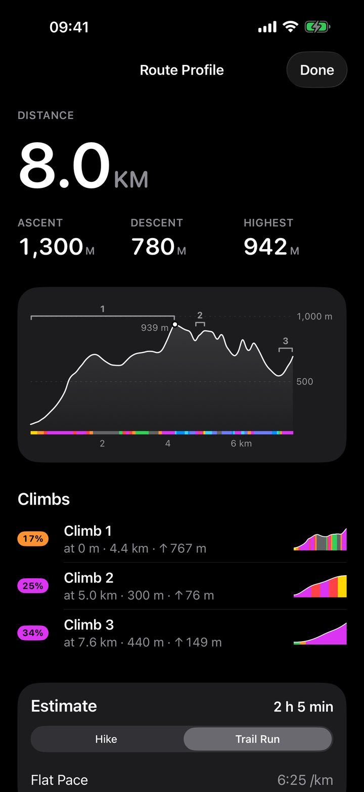
Map data © OpenStreetMap contributors · © OpenMapTiles · OpenFreeMap
A grade-coloured elevation profile, with every climb numbered.
An estimated time for each, from the same line.
Import from Files, Mail or AirDrop. Export any route or activity.
New routes can go to your watch on their own, with the offline map that covers them.
Apple Watch
Ridgeway opens to a full-screen topo map. Follow a route, record, reverse it or head Back to Start with your iPhone left at home, and download maps on the watch itself over Wi-Fi or cellular.
Heading-up, with the next turn. Turn the Digital Crown to zoom.
Time, pace and heart rate, and the battery you’ll finish with.
The next aid station, and your time in hand.
Where the line is, and where it goes next.
The distance and the direction back, in one glance.
Map data © OpenStreetMap contributors · © OpenMapTiles · OpenFreeMap
You Part of Ridgeway Plus
Bring in your hiking, walking and trail-running workouts from Apple Health, routes and all, and see how far you’ve gone, how much you’ve climbed and a map of everywhere you’ve been. Road runs stay out, and your history stays on your iPhone.
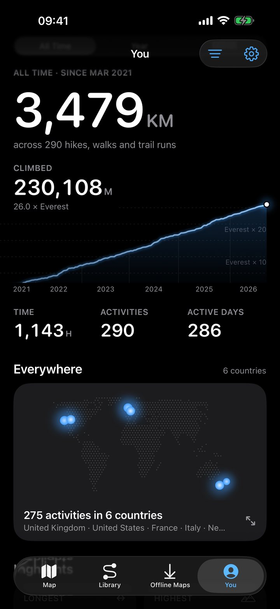
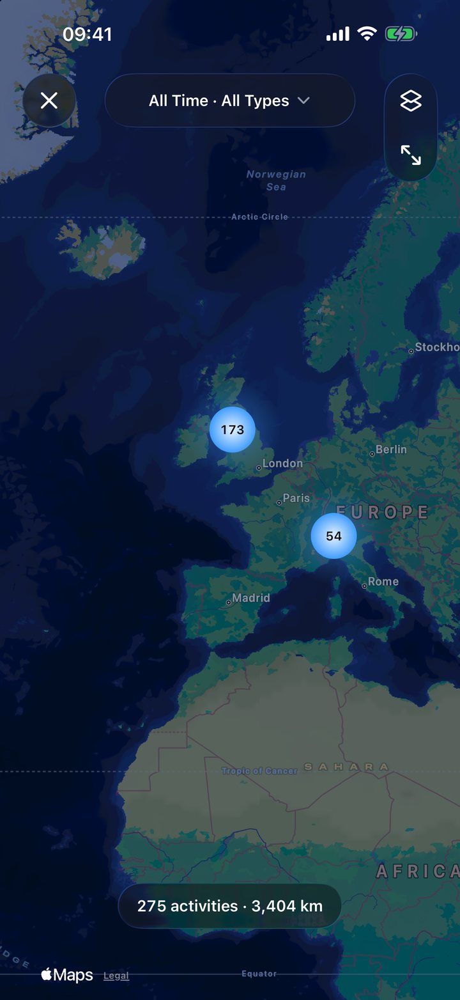
Shown with sample history.
Distance, climb, time and active days, with your climb drawn over the years.
Every activity on one map, grouped by where it happened.
Map styles
Standard Light, Standard Dark and Minimal Light, plus Hiking Pro and Tactical with Ridgeway Plus. Hiking Pro shows everything: 10 m contours, rock and scree, path types and summit heights. Tactical is red on black, and keeps your night vision.
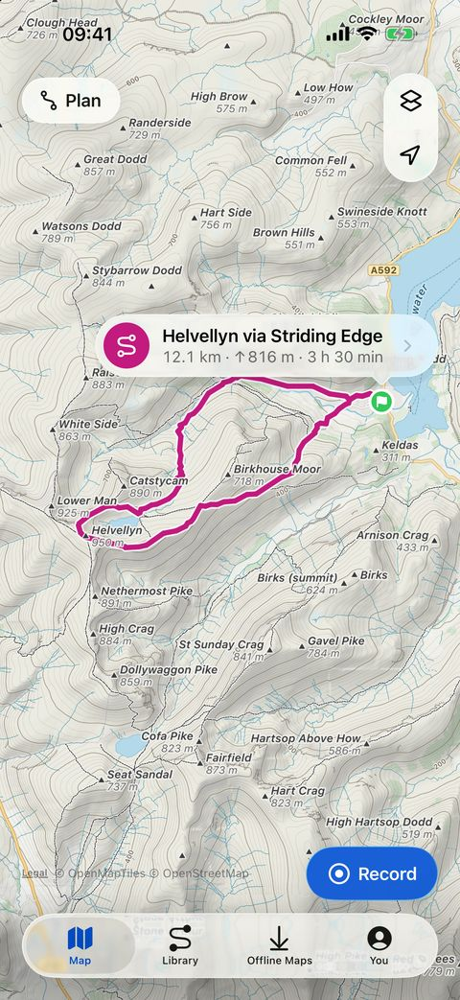
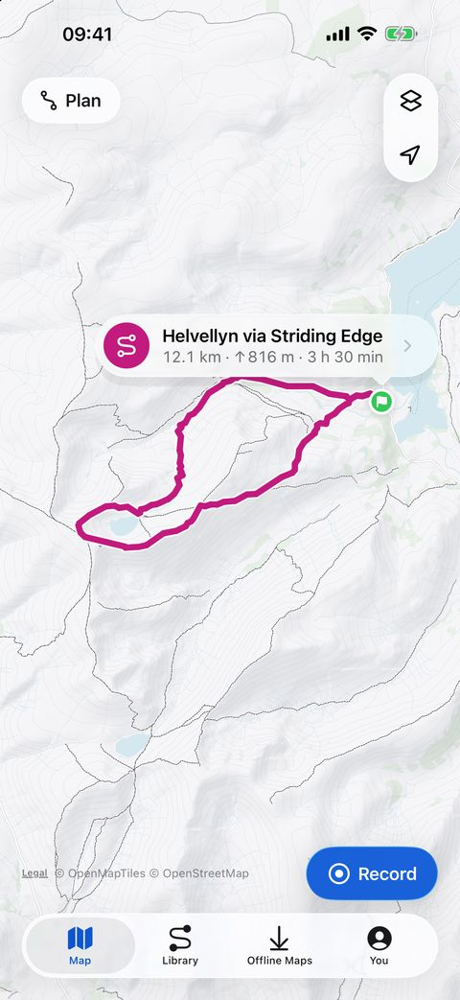
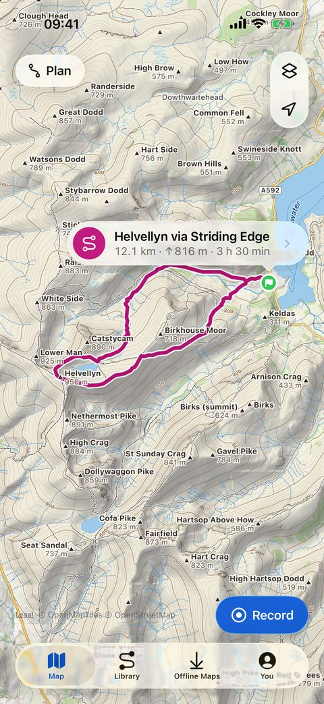
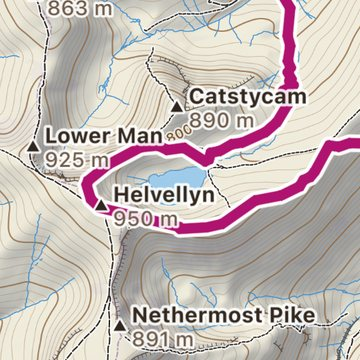
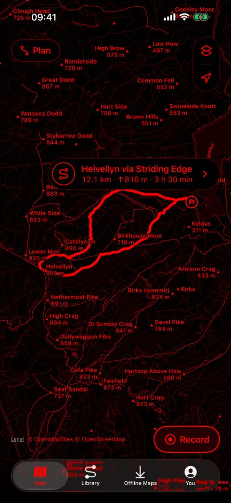
Map data © OpenStreetMap contributors · © OpenMapTiles · OpenFreeMap
Your routes and activities stay on your iPhone and Apple Watch. There is no Ridgeway server, and the developer collects no data. Ridgeway goes online for map tiles, and Use Only Offline Maps turns that off.
Every request it makes, in the privacy policyRidgeway Plus
Everything that gets you there and back is free, on iPhone and Apple Watch. Ridgeway Plus is an optional one-time purchase, shared through Family Sharing, that adds three things.
Your Apple Health history, all-time totals and highlights, and the world map in the You tab.
Two more map styles, on iPhone and Apple Watch.
Aid stations and cutoffs, arrival times and margins, and the Next Aid page on your wrist.
No subscription, no pop-ups, and never a prompt during an activity. Safety never needs Ridgeway Plus.
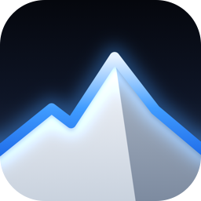
Coming to the App Store
For iPhone with iOS 26 or later, and Apple Watch with watchOS 26 or later.